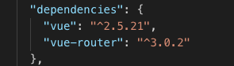

Creating New Locations in the Application
Creating new locations in a Vue.js app is as simple as adding a new route definition. However, we also will usually want to create a new component to handle the unique content that should be displayed at the new location. This is not terribly difficult to accomplish, but it can be made easier if we have some handy reference material.
In this section we will look at the basic steps involved in creating a new component and route within our Vue.js application. (There are plenty of reasons to create new components that don't necessarily map to a specific route in the application. The first part of these directions should generally work for that, too.)
Defining a New Component
The first step in creating a new component is to create a new .vue component in the either the src/components/ directory or the src/views directory. If your component will be used as a router component then it should go in the views directory.
All of our components follow the same pattern, so we can use a little snippet of code as a way to bootstrap the new components.
Here is a basic Vue component skeleton. There is no logic here, and it is meant to be edited to perform the specific function we need. But this provides us with a basic template to fill up with our custom stuff.
<template>
<div class="component">
<h2>{{ message }}</h2>
</div>
</template>
<script>
export default {
data () {
return {
message: 'This component works.'
}
}
}
</script>
<style scoped>
.component {
background: #e8e8e8;
min-height: 400px;
}
</style>
To get a new component going, we can simply copy the blank template above into a file and save it into the src/components/ or source/views directory in our project. It is important to maintain our naming pattern and give the file a .vue extension so it can be properly understood by our build system and framework.
Once we have bootstrapped the basic component (even in this primitive form), we can define the route that will serve our new component.
Code Snippets
Many code editors allow developers to create "snippets" of code that can be re-used in different places. Developers love to create and save small chunks of code that can help them get started quicker on building a new component, or to help them stick with a proven pattern or method. Saving snippets of code can be a huge timesaver when writing complex software, especially when we work with the same frameworks and libraries over and over again.
Most code editors will support a "snippets" feature. It's worthwhile to explore the features of our chosen text editors and see how they handle snippets of code. If the editor doesn't support storing random small code snippets, we can build up a set of files in a snippets directory and manage our boilerplate code that way. However we choose to manage this information, storing and accessing these quick snippets is a great way to work.
Setting up the New Route
To set up a new route that uses the component we just created, we can add a new route definition object to our routes Array. It's important to note that we must import the component at the top of the routes.js file so that the Vue.js framework can properly identify, understand, and link the modules we've defined. Here is what that would look like in our route definitions file:
import Vue from 'vue'
import Router from 'vue-router'
import Home from '@/views/Home'
import NewComponent from '@/views/NewComponent'
Vue.use(Router)
export default new Router({
routes: [
{
path: '/',
name: 'home',
component: Home
},
{
path: '/newcomponent',
name: 'newComponent',
component: NewComponent
}
]
})
Looking at this example, we can see that there is a set of import statements at the top of the routes.js file. These list every module that is being used within this file: Vue, Router, Home, and NewComponent. Each import statement names the module it is importing and then indicates where the module will be found using the from clause. In the case of Vue and Router, these modules are made available for us by virtue of our dependency management system (stewarded by NPM and Webpack). (Note: We will explore more about dependencies in future sections.)
If you look in your package.json file you should see that the vue-router is set up as a dependency to be installed when you run npm install.

If it's not installed, you can install is as an application dependency with the following command.
npm install vue-router --save
In the case of our custom code, we must actually indicate what file contains the module we wish to import. This file path uses a couple of shorthand references to reduce the characters we need to type. The path is a string, so it needs to be in quotes. Each path begins with the @ symbol, which is a shortcut unique to the way a Vue.js project is created when using the Vue CLI. The @ shortcut refers to the /src/ directory, and it is defined in the Webpack configuration. It is the same as writing /src/ at the beginning of the path. Finally, we have the path and filename. Filenames do not need to include the .vue extension because it is inferred.
So the import for import NewComponent from '@/views/NewComponent' refers to the file found at /src/views/NewComponent.vue and will import the module from that file with the name NewComponent. We use the NewComponent name when referencing the component in the route definition.
Once we have this route definition set up, we could visit the path in our development browser and we should see the new content displayed. The only thing left to do is to create links within our application to bring users to this new location.